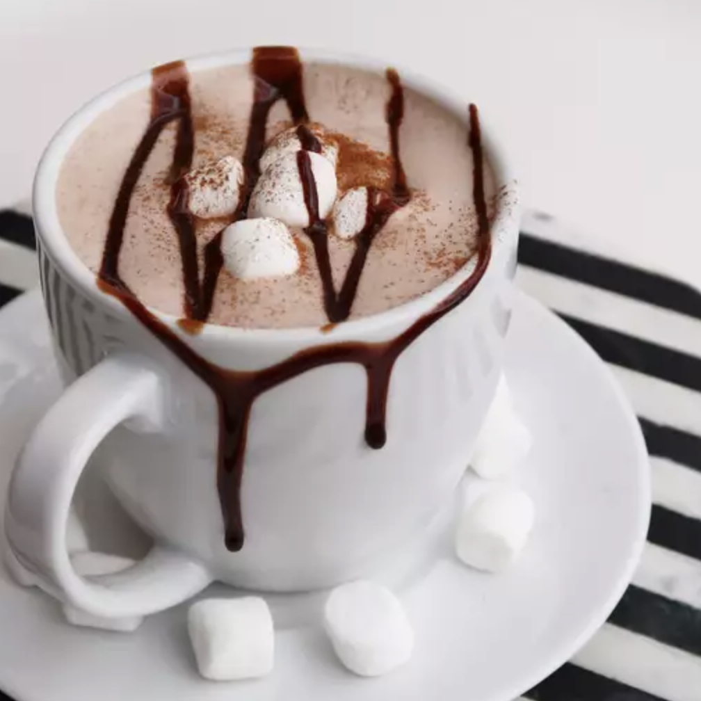

Chocolate Bar Hot Chocolate

Description
With full-size chocolate bars leftover from Halloween, I wanted to use some up and decided to try to make hot chocolate out of one. The result was fabulous!
Ingredients
- 1 (1.55 ounce) bar milk chocolate, chopped
- ⅔ cup milk, or more to taste
- 1 pinch ground cinnamon
Steps
- Place chocolate pieces in a saucepan over medium-low heat; add milk and whisk constantly until chocolate is melted and well blended, about 5 minutes. Whisk in cinnamon. Remove from heat; add more milk if desired. Serve in a mug.